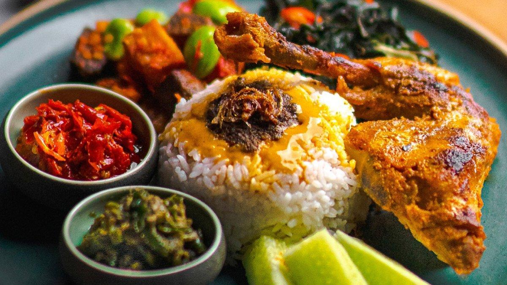
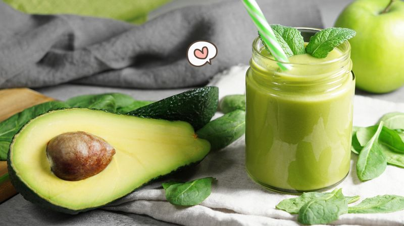

Tentang saya
Nama saya Syahniar Baharudin Taher, Saya berasal dari Indramayu, Pekerjaan saya adalah Freelance pada suatu halaman website
Fiverr. Saya memiliki ketertarikan yang tinggi di dunia Teknologi, impian saya adalah ingin menjadi
Full Stack-Developer/Mobile App Developer dan menghasilkan karya yang luar biasa. Itu saja dari saya.
Terima kasih atas perhatiannya.
Saya tertarik dengan ilmu-ilmu yang belum saya ketahuai di luar sana, terutama dalam bidang IT/Teknologi.
Makanan Favorit: Nasi Padang

Nasi padang adalah makanan favorit saya sejak waktu SMP sampai sekarang
Nasi padang tidak bisa terlupakan dibenak saya.
banyak pengalaman yang saya dapatkan dari nasi padang, mulai dari teman, sahabat, kerabat, maupun teman lama.
Minuman Favorit: Jus Alpukat

Jus Alpukat adalah minuman sewaktu saya masih kecil sekitar umur 8-10 tahun, dan minuman ini juga banyak khasiatnya.
khasiat yang terkandung dalam jus alpukat ini adalah:
- Membantu Menjaga Berat Badan: Buah Alpukat memiliki serat dan karbohidrat sehingga mengonsumsinya membuat kenyang lebih lama.
- Mencegah Sembelit: Sembelit terjadi karena kurang asupan serat. Jadi untuk mengatasi kondisi tersebut Anda dapat memenuhi asupan serat. Asupan serat ini dapat Anda peroleh dari buah Alpukat.